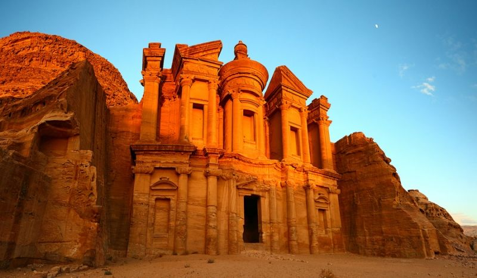

Las 7 Maravillas del Mundo
En un mundo de maravillas, el tiempo se detiene y la historia cobra vida. Siete monumentos, siete obras maestras de la arquitectura y el ingenio humano, guardan los secretos de civilizaciones milenarias. Únete a este viaje a través de las arenas del tiempo, donde cada pilar, cada piedra y cada rincón susurra una historia de grandeza y misterio. Descubre la magia de las siete maravillas del mundo, donde la realidad supera a la leyenda.
Las 7 Maravillas del Mundo Antiguo
1. Gran Pirámide de Giza (Egipto)
La única Maravilla del Mundo Antiguo que sigue en pie. Fue construida como tumba para el Faraón Keops y es un testimonio del poder y la precisión de la ingeniería egipcia, manteniendo el récord de la estructura más alta hecha por el hombre durante milenios.
2. Jardines Colgantes de Babilonia (Irak)
Una leyenda de la antigüedad, se dice que fueron un complejo sistema de terrazas ajardinadas construidas en la antigua ciudad de Babilonia, a orillas del río Éufrates. Su existencia se debate, pero la imagen de cascadas de vegetación en el desierto perdura.
3. Estatua de Zeus en Olimpia (Grecia)
Una colosal estatua de más de 12 metros de altura del dios Zeus, creada por el escultor Fidias y ubicada en el templo dedicado a él en Olimpia. Estaba hecha de marfil y oro (criselefantina) y era una vista impresionante para los visitantes de los antiguos Juegos Olímpicos.
4. Templo de Artemisa en Éfeso (Turquía)
Un templo masivo y espléndido dedicado a la diosa griega de la caza. Fue famoso no solo por su tamaño, sino por su belleza y las obras de arte que contenía. Fue destruido y reconstruido varias veces, siendo su última destrucción atribuida a un incendio.
5. Mausoleo de Halicarnaso (Turquía)
Una tumba monumental construida para Mausolo, un sátrapa (gobernador) del Imperio Persa, y su esposa Artemisia II. Su complejo diseño arquitectónico inspiró el término moderno "mausoleo" por su grandeza.
6. Coloso de Rodas (Grecia)
Una gigantesca estatua del dios griego Helios, erigida en la isla de Rodas. Se cree que la estatua fue construida para celebrar una victoria militar y fue una de las estatuas más altas del mundo antiguo, aunque solo estuvo en pie por 54 años antes de ser derribada por un terremoto.
7. Faro de Alejandría (Egipto)
Construido por la Dinastía Ptolemaica, fue uno de los faros más altos jamás construidos y sirvió como un vital faro para los marineros que entraban y salían del puerto de Alejandría. Su ingeniería y complejidad lo convirtieron en un modelo a seguir durante siglos.

Las 7 Maravillas del Mundo Moderno
1. La Gran Muralla China (China)
Una serpiente de piedra que serpentea por miles de kilómetros, testigo de la historia y el ingenio humano en la defensa de un imperio. Es la estructura más grande jamás construida por el hombre y un símbolo perdurable de la fuerza y la perseverancia. Su construcción se remonta al siglo VII a.C., aunque las secciones más conocidas fueron construidas durante la dinastía Ming. Un verdadero titán de la ingeniería.
2. Petra (Jordania)
La "Ciudad Rosa" esculpida en roca, con sus impresionantes fachadas talladas directamente en los acantilados. Es un testimonio de la avanzada ingeniería y el arte de la civilización nabatea, una joya oculta en el desierto. Destacan monumentos como El Tesoro (Al-Khazneh) y El Monasterio (Ad Deir), que cortan el aliento por su majestuosidad.
3. Machu Picchu (Perú)
La ciudadela inca perdida en las alturas de los Andes, un lugar místico y enigmático que desafía las leyes de la arquitectura. Su belleza natural y sus construcciones de piedra perfectas lo convierten en un santuario de la historia y la cultura. Se cree que fue construida alrededor de 1450 y abandonada un siglo después debido a la conquista española.
4. Chichén Itzá (México)
El esplendor de la civilización maya se revela en esta antigua ciudad, con su pirámide Kukulkán (El Castillo) como epicentro. Un lugar donde la astronomía, las matemáticas y el arte se unen para crear un legado imponente y misterioso. Cada equinoccio, la sombra de una serpiente emplumada "desciende" por los escalones de la pirámide, un espectáculo impresionante.

5. Cristo Redentor (Brasil)
Dominando la vibrante ciudad de Río de Janeiro desde la cima del Corcovado, esta icónica estatua de art déco extiende sus brazos en señal de bienvenida. Más que un símbolo religioso, es un emblema de paz y la vista panorámica que ofrece de la bahía y la ciudad es simplemente inigualable.
6. El Coliseo Romano (Italia)
El anfiteatro romano, una proeza de la ingeniería antigua y un recordatorio de la grandeza del Imperio Romano. Sus ruinas evocan las batallas de gladiadores, las recreaciones de batallas navales y los espectáculos públicos que cautivaron a multitudes hace siglos. Un icono inmortal de Roma.
7. El Taj Mahal (India)
Una obra maestra de la arquitectura mogol, un mausoleo de mármol blanco puro que brilla bajo el sol y cambia de color según la hora del día. Construido por el emperador Shah Jahan en memoria de su esposa Mumtaz Mahal, es un monumento al amor eterno y uno de los edificios más bellos y simétricos del mundo.
MOTOR DE BÚSQUEDA, POR SI QUIERES ENCONTRAR MAS INFORMACIÓN DEL TEMA.
Hipervínculo para conocer un poco mas de las maravillas.
¡Esperamos que este viaje por las 7 Maravillas del Mundo haya sido fascinante!
© 2025 Instituto Nacional de Lolotique.